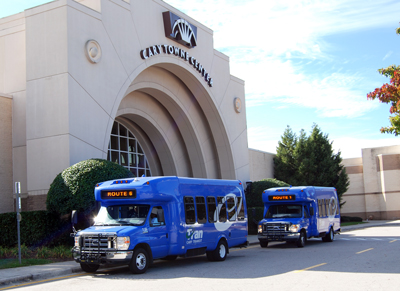

Town of Cary
North Carolina
At the Town of Cary we focus every day on enriching the lives of our citizens by creating an exceptional environment and providing exemplary services that enable our community to thrive and prosper.

Departments
Fire protects the community from the adverse effects of disasters and emergencies by employing highly motivated, well-trained fire personnel who use proactive and cost efficient approaches to emergency response and public fire education; provides fire suppression, emergency medical service in a first responder capacity, and technical rescues. The department is internationally accredited.
Human Resources develops and promotes model personnel and safety programs and practices designed to attract, develop, and retain a well-qualified and diverse workforce for Town government. Responsibilities include advising management on recruitment and hiring, classification and pay, employee relations, performance reviews, equal employment opportunities, employee training and development, benefits administration, and employee safety.
Inspections and Permits reviews plans and issues permits for building construction; administers and enforces all residential and commercial elements of the NC Building Code -- Building, Fire, Mechanical, Plumbing, and Electrical -- as well as applicable local laws; calculates and collects development-related fees.
Police partners with the community to protect life and property via geographic policing districts to help ensure Cary remains one of the nation’s safest cities; includes Police Records, Traffic Safety and School Resource Officer teams as well as a Criminal/Juvenile Investigations Division; operates the Emergency Communications Center (911); provides Animal Control services; leads Project PHOENIX (Promoting Healthy Occupancy through Education, Networking and Information eXchange). The department is nationally accredited.
Public Works maintains and repairs Town buildings, grounds, parks, greenways, streets, and traffic signals as well as water, wastewater, and reclaimed water lines and equipment located off a plant site; collects and properly disposes of garbage and trash, yard waste, and recycling, conducts fleet maintenance for all Town vehicles and equipment; coordinates community litter reduction and beautification.
Technology Services supports Town Council and staff in the management and use of information technology to provide better and more cost effective services within Town government in service to the citizens of Cary.
For a more detailed explanation of the departments then please visit the Desktop version